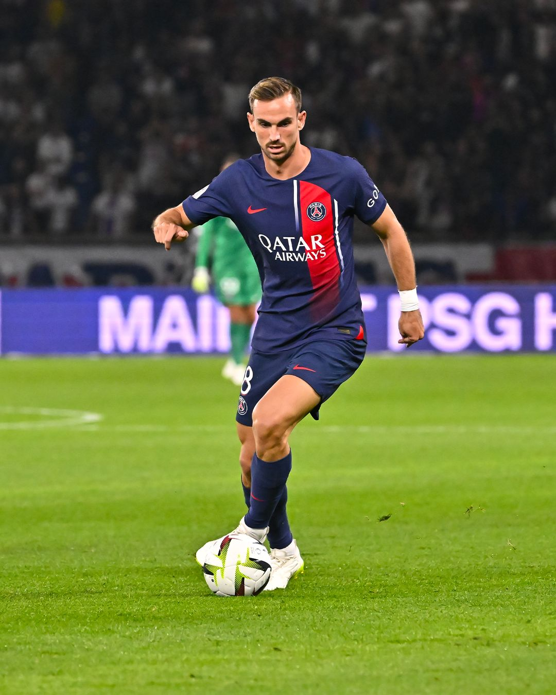
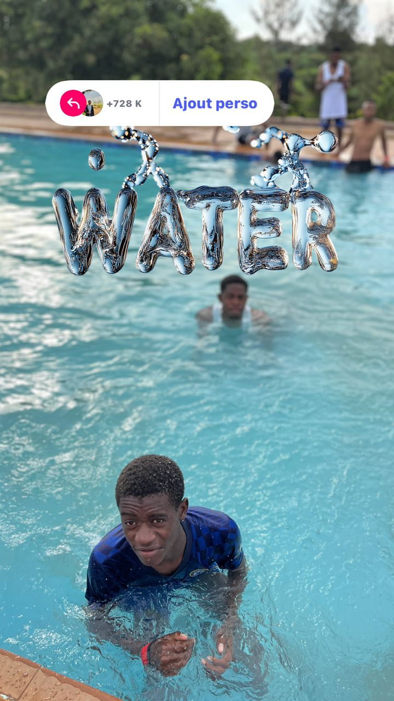
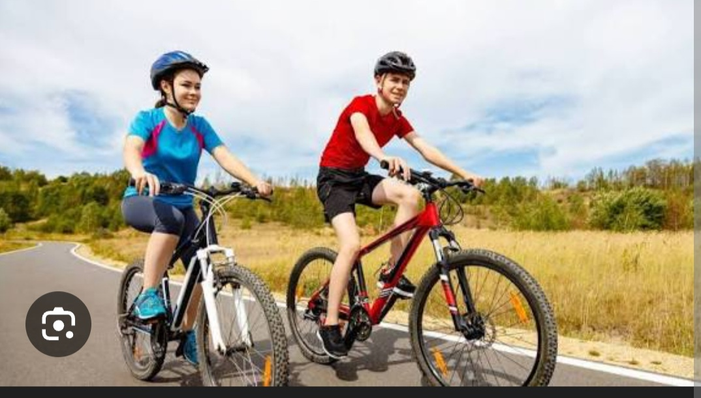

j'aime bien regarder le match de football et mon équipe préferé c'est le PSG
Mon joueur préferé c'est Kylian Mbappe , le foof est un sport qui renait l'espoir , les emotion qui fait vivre et faire battre le coeur
La natation est un sport à la fois apaisant et exigeant
Dans l'eau on se sent libre , leger et detendu , comme si chaque mouvement effacer le stress et apportait un sentiment de bien etre.


j'aime bien regarder la course de vélo
faire du vélo est un loisir qui m'aide a etendre mes muscles